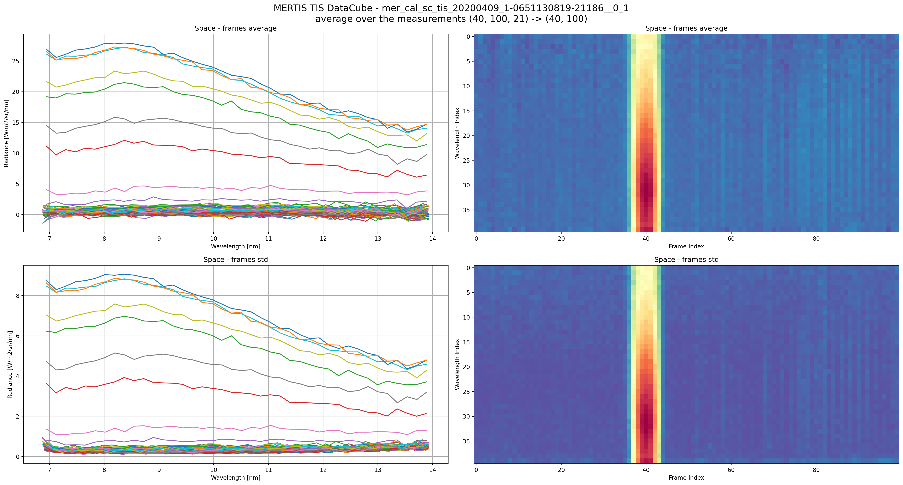

from pathlib import Path
import matplotlib.dates as mdates
from matplotlib import pyplot as plt
import mertisreader as mr
import pandas as pd
import richExample Workflow
Example Workflow
This page preserves the exploratory flow from the example notebook, but in a Quarto-friendly form that can be rendered with the rest of the site.
Imports
Initialize the Reader
candidate_roots = [Path.cwd().resolve(), Path.cwd().resolve().parent, Path.cwd().resolve().parent.parent]
repo_root = next(root for root in candidate_roots if (root / "data").exists())
input_path = repo_root / "data/bcmer_tm_all_START-20200409T000000_END-20200410T000000_CRE-20240717T132010-ParamEventBootSciHK-short/cal"
output_path = Path("/tmp/")
log_level = "INFO"
ms_reader = mr.MERTISDataPackReader(input_dir=input_path, output_dir=output_path, log_level=log_level)
ms_reader.data_collector()
ms_reader.data_assembler(verbose=True)2026-06-11 11:46:30,171|2183099|INFO|input_dir=PosixPath('/home/kidpixo/work/esa/mertis_data_management/mertisreader/data/bcmer_tm_all_START-20200409T000000_END-20200410T000000_CRE-20240717T132010-ParamEventBootSciHK-short/cal')Reading filetype: hk_default from mer_cal_hk_default_20200409_1-0651130766-12538__0_1
Processing label: /home/kidpixo/work/esa/mertis_data_management/mertisreader/data/bcmer_tm_all_START-20200409T000000_END-20200410T000000_CRE-20240717T132010-ParamEventBootSciHK-short/cal/mer_cal_hk_default_20200409_1-0651130766-12538__0_1.lblx
Now processing a Table_Delimited structure: MERTIS_CAL_DEFAULT_HOUSEKEEPING_DATA_TABLE
Reading filetype: hk_extended from mer_cal_hk_extended_20200409_1-0651130766-12595__0_1
Processing label: /home/kidpixo/work/esa/mertis_data_management/mertisreader/data/bcmer_tm_all_START-20200409T000000_END-20200410T000000_CRE-20240717T132010-ParamEventBootSciHK-short/cal/mer_cal_hk_extended_20200409_1-0651130766-12595__0_1.lblx
Now processing a Table_Delimited structure: MERTIS_CAL_EXTENDED_HOUSEKEEPING_DATA_TABLE
Reading filetype: tis from mer_cal_sc_tis_20200409_1-0651130819-21186__0_1Reading filetype: tis from /home/kidpixo/work/esa/mertis_data_management/mertisreader/data/bcmer_tm_all_START-20200409T000000_END-20200410T000 000_CRE-20240717T132010-ParamEventBootSciHK-short/cal/mer_cal_sc_tis_20200409_1-0651130819-21186__0_1.fits
n_wav=40 # generic wavelengths : not precise enough for scientific analysis!
| | tis_stem | finite(geo) | geo.size |
|---:|:------------------------------------------------|--------------:|-----------:|
| 0 | mer_cal_sc_tis_20200409_1-0651130819-21186__0_1 | 672 | 10500 |
Indices of measurements targets (HK_STAT_TIS_DATA_ACQ_TARGET):
space_index_merged.shape=(21,)
bb7_index_merged.shape=(0,)
bb3_index_merged.shape=(0,)
planet_index_merged.shape=(0,)
Collected data statistics:
Number of TIS files: 1
Number of HK files: 2
Number of TIR files: 0
Number of TIS QL files: 0
Number of TIR QL files: 0Inspect the Assembled Data
file_key = list(ms_reader.frames.keys())[0]
print(f"Example DataCube shape for file {file_key}: {ms_reader.frames[file_key].shape}")
print(f"Geometry keys: {ms_reader.geom_ls[file_key].keys()}")Example DataCube shape for file mer_cal_sc_tis_20200409_1-0651130819-21186__0_1: (40, 100, 21)
Geometry keys: dict_keys(['MERTIS_TIS_GEOMETRY_TARGET_LONGITUDE', 'MERTIS_TIS_GEOMETRY_TARGET_LATITUDE', 'MERTIS_TIS_GEOMETRY_SUBSPACECRAFT_LONGITUDE', 'MERTIS_TIS_GEOMETRY_SUBSPACECRAFT_LATITUDE', 'MERTIS_TIS_GEOMETRY_SUB_SUN_LONGITUDE', 'MERTIS_TIS_GEOMETRY_SUB_SUN_LATITUDE', 'MERTIS_TIS_GEOMETRY_TARGET_ALTITUDE', 'MERTIS_TIS_GEOMETRY_SUBSPACECRAFT_ALTITUDE', 'MERTIS_TIS_GEOMETRY_SUB_SUN_ALTITUDE', 'MERTIS_TIS_GEOMETRY_TARGET_DISTANCE', 'MERTIS_TIS_GEOMETRY_TARGET_ANGULAR_DIAMETER', 'MERTIS_TIS_GEOMETRY_LOCAL_TIME', 'MERTIS_TIS_GEOMETRY_TARGET_PHASE_ANGLE', 'MERTIS_TIS_GEOMETRY_TARGET_EMISSION_ANGLE', 'MERTIS_TIS_GEOMETRY_TARGET_INCIDENCE_ANGLE'])Preview Metadata
ms_reader.mertis_tis_metadata[file_key].iloc[0:4].T| 0 | 1 | 2 | 3 | |
|---|---|---|---|---|
| TIME_UTC | 2020-04-09T05:40:20.710Z | 2020-04-09T05:40:31.748Z | 2020-04-09T05:40:32.548Z | 2020-04-09T05:40:33.348Z |
| TIME_OBT | 1/0651130819:21186 | 1/0651130830:23689 | 1/0651130831:10567 | 1/0651130831:62998 |
| TimeStamp | 651130823.044403 | 651130830.950928 | 651130831.746674 | 651130832.544235 |
| HK_STAT_TIS_DATA_ACQ_ID | 3740 | 3743 | 3744 | 3745 |
| HK_STAT_TIS_DATA_ACQ_TYPE | Sci_Raw | Sci_Subtracted_BB3 | Sci_Subtracted_BB3 | Sci_Subtracted_BB3 |
| HK_STAT_TIS_DATA_ACQ_TARGET | Space | Space | Space | Space |
| HK_STAT_BOL_BIAS_VOLT_ACTIVE_PARAM_SET | 2 | 2 | 2 | 2 |
| HK_STAT_TIS_DATA_ACQ_TIME | 651130819.323273 | 651130830.361465 | 651130831.16124 | 651130831.961273 |
| PAR_TIS_BIN_MODE | 1x2 | 1x2 | 1x2 | 1x2 |
| PAR_TIS_WIN_SIZE | 100x80pixel | 100x80pixel | 100x80pixel | 100x80pixel |
| PAR_TIS_COMP_MODE | lossless | lossless | lossless | lossless |
| HK_STAT_TIS_COMP_VERSION | 1 | 1 | 1 | 1 |
| HK_STAT_TIS_COMP_RICE_K_VALUE | 8 | 8 | 8 | 8 |
| HK_STAT_TIS_COMP_INPUT_LENGTH | 100 | 100 | 100 | 100 |
| HK_STAT_TIS_COMP_NUM_BANDS | 5 | 5 | 5 | 5 |
| HK_STAT_TIS_NUM_OVERSAMP | 0 | 32 | 32 | 32 |
| HK_TEMP_BOL_CHIP | 15.0 | 15.0 | 15.003 | 15.002 |
| DAT_TIS_OFFSET_MACRO_PIXEL | 1 | 2052 | 2052 | 2053 |
| HK_TEMP_BOL_HOUSING | 9.527 | 9.519 | 9.519 | 9.52 |
| HK_TEMP_OST_BASE_PLATE | 9.894 | 9.891 | 9.889 | 9.889 |
| PAR_TIS_DATA_NOISE_REDUCTION | 0 | 0 | 0 | 0 |
| HK_STAT_TIS_TOTAL_PACKET_NUM | 1 | 1 | 1 | 1 |
| HK_STAT_TIS_CURRENT_PACKET_NUM | 1 | 1 | 1 | 1 |
| HK_STAT_TIS_NUM_DATA_WORDS | 384 | 1206 | 1200 | 1208 |
Plot a Frame Summary
full_frames_3D = ms_reader.frames[file_key]
wav = ms_reader.wavelengths[file_key]
plot_index = ms_reader.space_index[file_key]
fig, ax = plt.subplots(ncols=2, nrows=2, figsize=(22, 12))
fig.suptitle(
f"MERTIS TIS DataCube - {file_key}\n"
f"average over the measurements {full_frames_3D.shape} -> {full_frames_3D[:, :, 0].shape}",
fontsize=16,
)
title = "Space"
ax[0][0].plot(wav, full_frames_3D[:, :, plot_index].mean(axis=2))
ax[0][0].set_title(f"{title} - frames average")
ax[0][1].imshow(full_frames_3D[:, :, plot_index].mean(axis=2), aspect="auto", cmap=plt.cm.Spectral_r)
ax[0][1].set_title(f"{title} - frames average")
ax[1][0].set_title(f"{title} - frames std")
ax[1][0].plot(wav, full_frames_3D[:, :, plot_index].std(axis=2))
ax[1][1].set_title(f"{title} - frames std")
ax[1][1].imshow(full_frames_3D[:, :, plot_index].std(axis=2), aspect="auto", cmap=plt.cm.Spectral_r)
_ = [a.set_xlabel("Wavelength [nm]") for a in ax[:, 0]]
_ = [a.set_ylabel("Radiance [W/m2/sr/nm]") for a in ax[:, 0]]
_ = [a.grid(True) for a in ax[:, 0]]
_ = [a.set_xlabel("Frame Index") for a in ax[:, 1]]
_ = [a.set_ylabel("Wavelength Index") for a in ax[:, 1]]
plt.tight_layout()
Notes
This is the user-facing version of the example workflow. The notebook under examples/ can stay as the exploratory starting point, while the QMD page becomes part of the published docs.